Para quem é
Para todo mundo que quer passar valores do Evangelho às crianças de um jeito leve e divertido.
👨👩👧Pais e famílias
🌟Evangelizadores infantis
🍎Professores e escolas
👵Avós
🤝Terapeutas e cuidadores

Jesus, parábolas, prece, Evangelho no Lar e virtudes em desenhos de traço grosso, feitos para crianças de 4 a 10 anos. Baixe, imprima e use quantas vezes quiser.
Quero os desenhos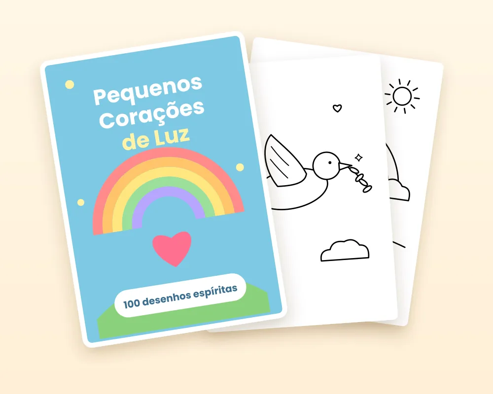
Para todo mundo que quer passar valores do Evangelho às crianças de um jeito leve e divertido.
Traço grosso, áreas amplas e cenas que conversam com o que a criança aprende em casa e na evangelização.
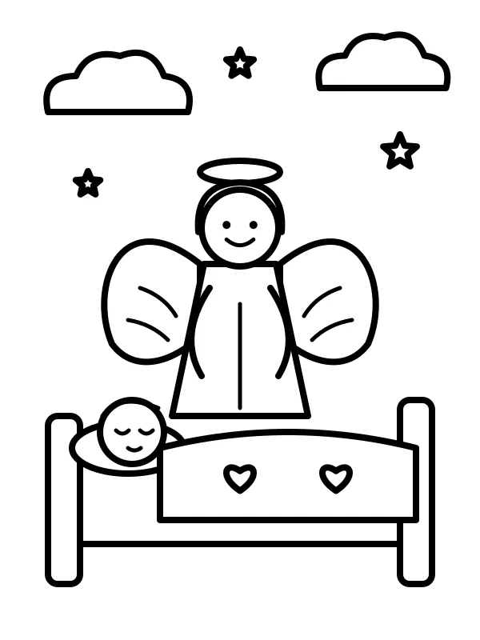
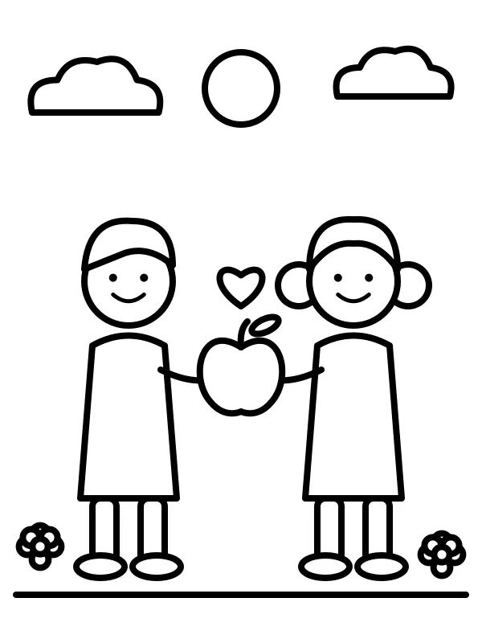
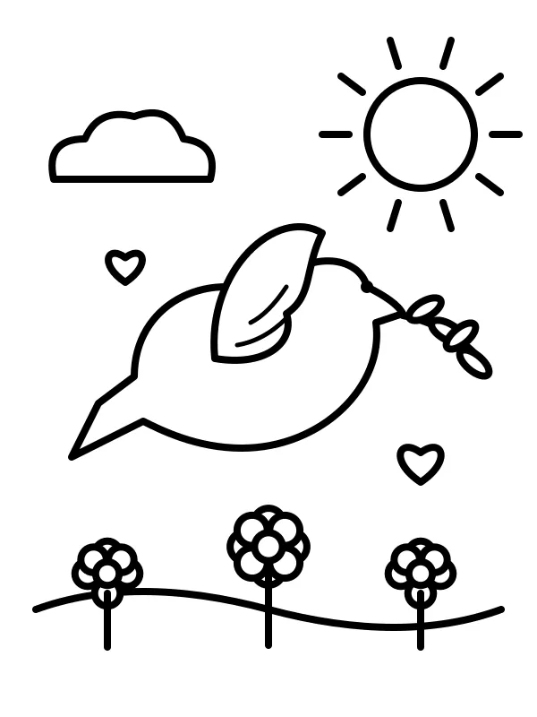
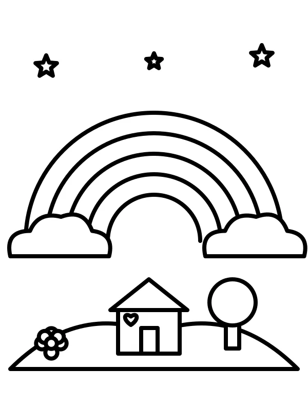
Assim é o livro que você recebe: capa, sumário organizado por tema e um desenho por página A4.
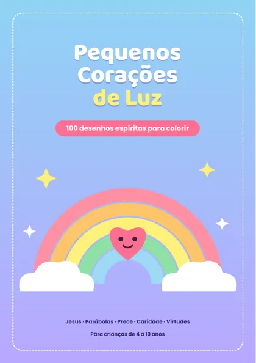
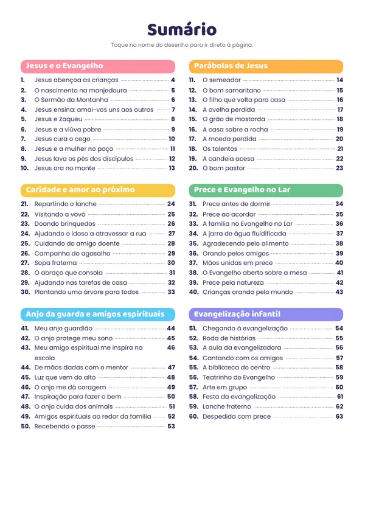
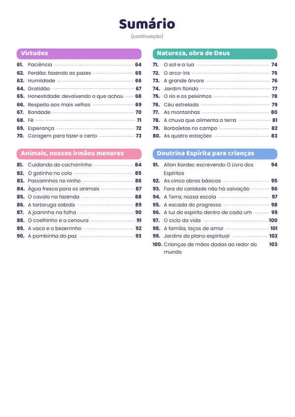
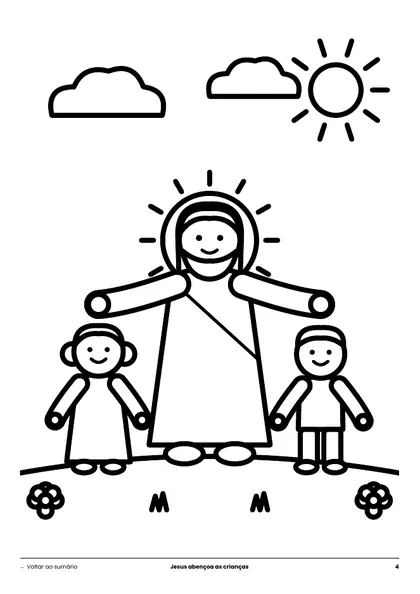
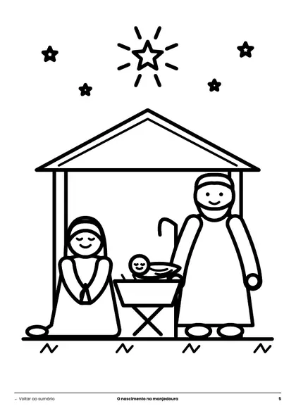
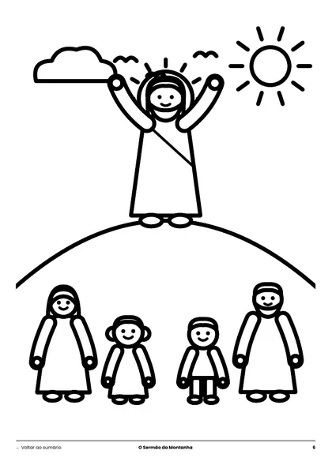
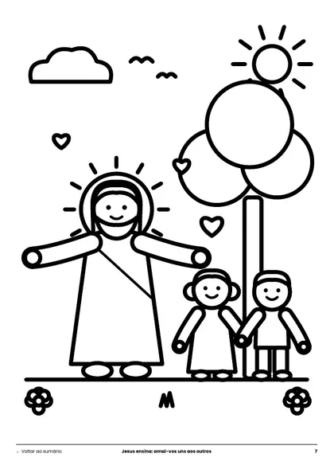
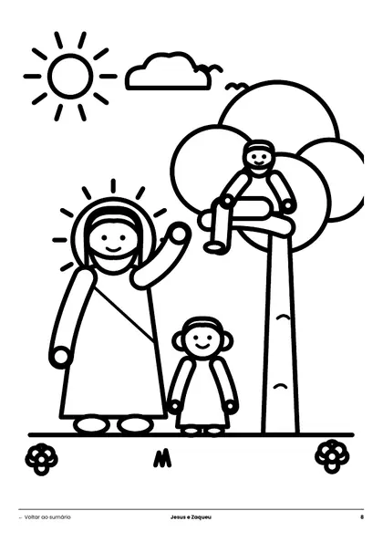
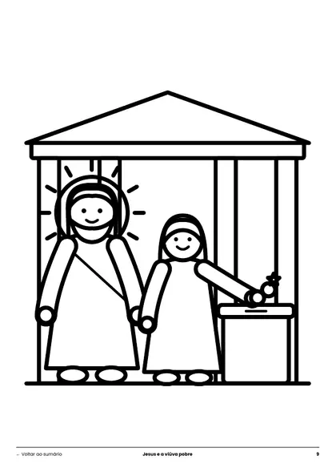
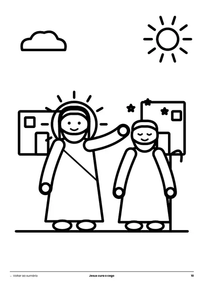
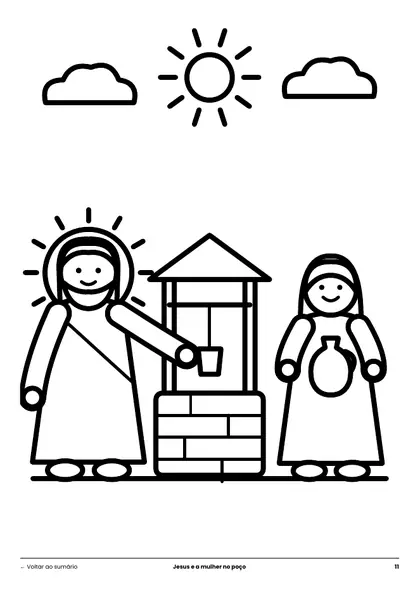
E por que você também vai.
Traços grossos e áreas grandes, ideais para mãos pequenas.
Cada criança escolhe suas cores e dá vida a cada cena.
Uma atividade calma e concentrada, no papel.
Um ótimo ponto de partida para conversar sobre Jesus, caridade e prece.
Simples assim:
Compra segura em poucos cliques.
O PDF chega na hora no seu e-mail.
Em casa, na escola ou no centro espírita.
Famílias e evangelizadores de todo o Brasil.

Imprimi o desenho do anjo da guarda e minha filha pediu para colorir antes da prece da noite. Virou nosso momento.

Sou evangelizadora e uso as parábolas no fim da aula. As crianças fixam a história colorindo.

Comprei para colorir com meus netos no fim de semana. Desenhos bonitos e fáceis de imprimir.
Depoimentos ilustrativos
Pagamento único. Acesso imediato. Sem mensalidade.
10 desenhos para colorir
100 desenhos + sumário clicável
De R$ 49,90 -60%
Se não gostar, é só pedir o reembolso em até 7 dias após a compra. Devolvemos 100% do valor, sem perguntas.
Não. O produto é digital: você recebe o PDF por e-mail e imprime em casa ou numa gráfica.
Sim! Imprima quantas vezes quiser, para seus filhos, netos ou alunos.
Os desenhos foram pensados para crianças de 4 a 10 anos, com traços grossos e áreas amplas.
Sim. Os temas seguem o Evangelho de Jesus e os princípios codificados por Allan Kardec, de forma simples e adequada às crianças.
Sim. Você pode imprimir para usar com sua turma.
O Básico tem 10 desenhos. O Completo tem 100 desenhos em 10 categorias e um sumário clicável para achar cada desenho rapidinho.
Confira a caixa de spam e a aba Promoções. Se não encontrar, fale com o suporte pelo e-mail informado na compra.
Desenhos para colorir, aprender e conversar em família. Acesso imediato por e-mail.
Escolher meu plano